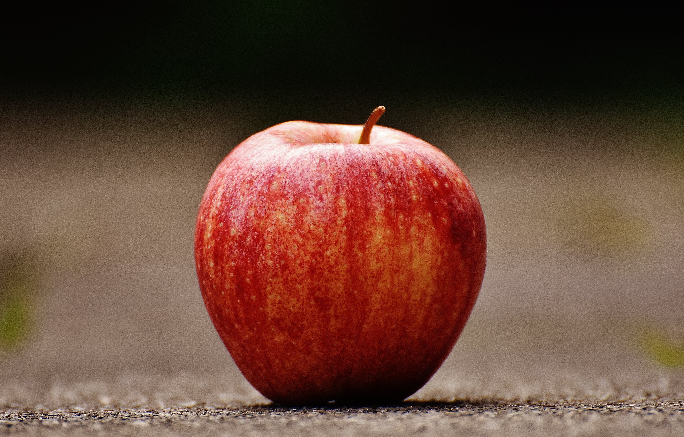
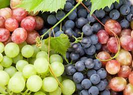

Fruits Page
Fruits Page

Apple
Apples are rich in fiber, vitamins, and antioxidants. They make a delicious and healthy snack.

Banana
Bananas are a good source of potassium and provide quick energy. They're great for smoothies or as a snack.

Orange
Oranges are known for their high vitamin C content. They're refreshing and juicy, perfect for a snack or juice.

Grapes
Grapes are sweet, juicy, and packed with antioxidants. They're a great addition to fruit salads or enjoyed on their own.